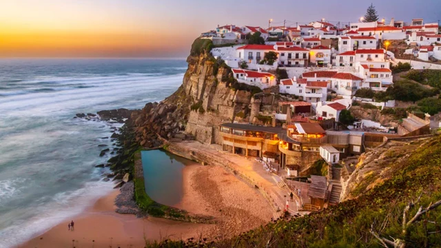
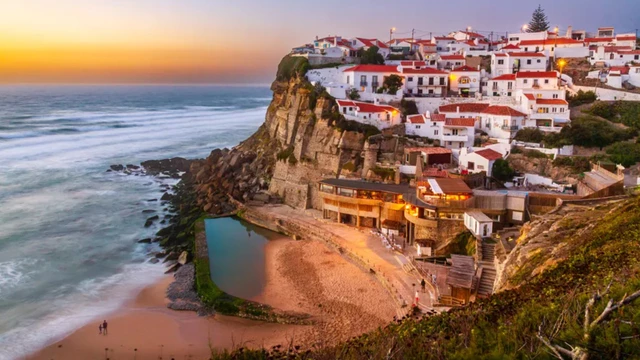

Portugal's Wonders
Around 10 million people call Portugal home, and it is an extremely popular tourist destination.
The nation is in the southwest of Europe and bordered by the Atlantic Ocean and Spain. The national language of Portugal is portuguese.
Portugal's northern regions are filled with mountains, while its southern regions are defined by hills. Portugal is a magnificant country with many things to see and do.